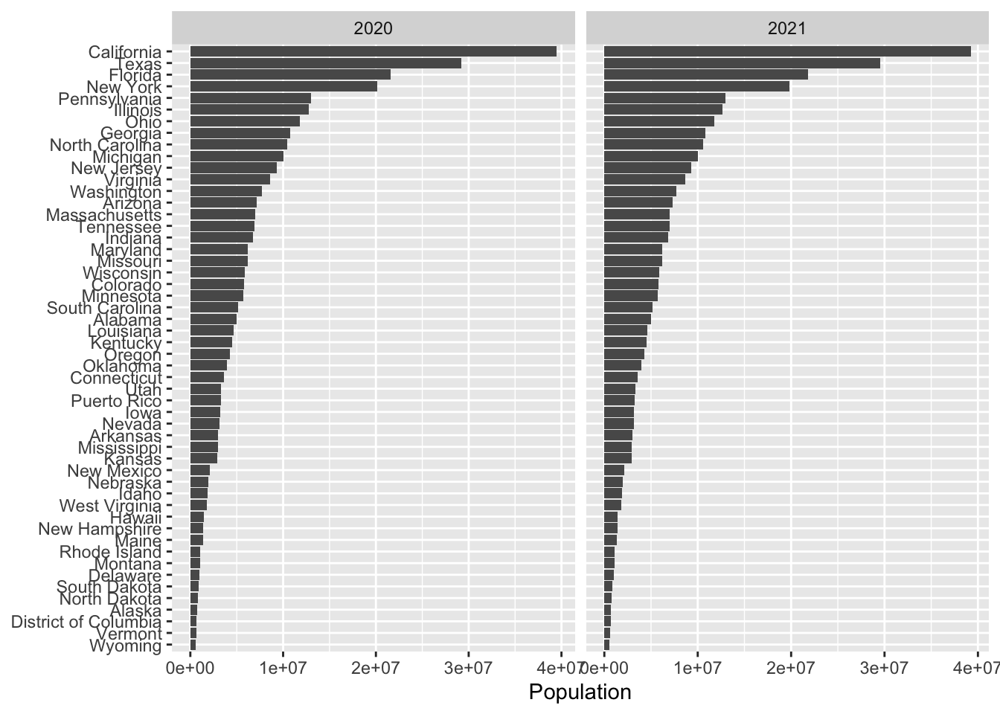
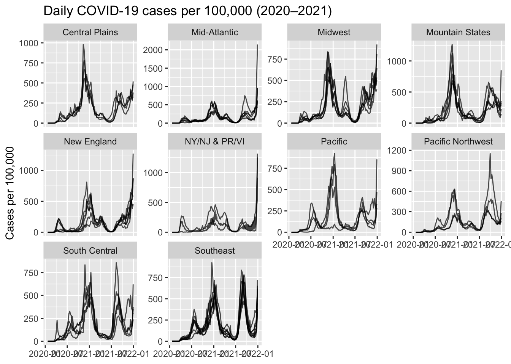
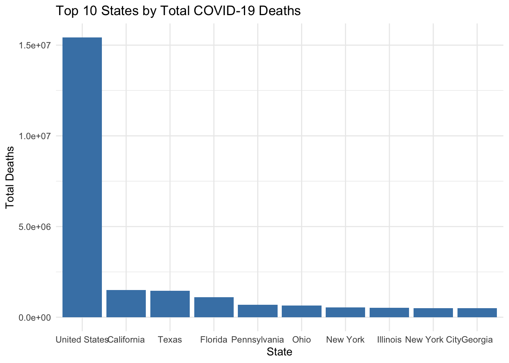
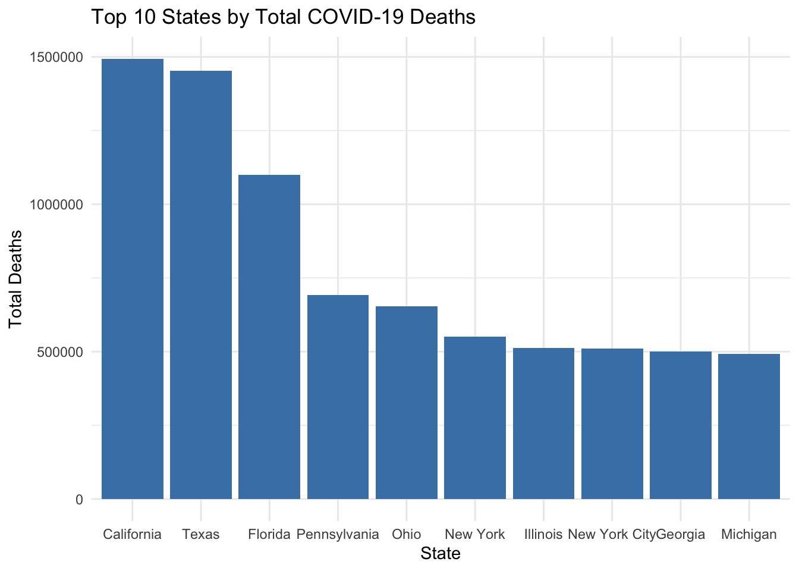

source("census-key.R")Problem set 4
In the next problem set, we plan to explore the relationship between COVID-19 death rates and vaccination rates across US states by visually examining their correlation. This analysis will involve gathering COVID-19 related data from the CDC’s API and then extensively processing it to merge the various datasets. Since the population sizes of states vary significantly, we will focus on comparing rates rather than absolute numbers. To facilitate this, we will also source population data from the US Census to accurately calculate these rates.
In this problem set we will learn how to extract and wrangle data from the data US Census and CDC APIs.
- Get an API key from the US Census at https://api.census.gov/data/key_signup.html. You can’t share this public key. But your code has to run on a TFs computer. Assume the TF will have a file in their working directory named
census-key.Rwith the following one line of code:
census_key <- "A_CENSUS_KEY_THAT_WORKS"Write a first line of code for your problem set that defines census_key by running the code in the file census-key.R.
- The US Census API User Guide provides details on how to leverage this valuable resource. We are interested in vintage population estimates for years 2021 and 2022. From the documentation we find that the endpoint is:
url <- "https://api.census.gov/data/2021/pep/population"Use the httr2 package to construct the following GET request.
https://api.census.gov/data/2021/pep/population?get=POP_2020,POP_2021,NAME&for=state:*&key=YOURKEYHERECreate an object called request of class httr2_request with this URL as an endpoint. Hint: Print out request to check that the URL matches what we want.
library(httr2)
request <- request(url) |>
req_url_query(
get = "POP_2020,POP_2021,NAME",
`for` = "state:*",
key = census_key
)- Make a request to the US Census API using the
requestobject. Save the response to and object namedresponse. Check the response status of your request and make sure it was successful. You can learn about status codes here.
response <- req_perform(request)
# Check status code, this won't give away the API key.
resp_status(response)[1] 200- Use a function from the httr2 package to determine the content type of your response.
resp_content_type(response)[1] "application/json"- Use just one line of code and one function to extract the data into a matrix. Hints: 1) Use the
resp_body_jsonfunction. 2) The first row of the matrix will be the variable names and this OK as we will fix in the next exercise.
population <- resp_body_json(response) |> do.call(what = rbind)
# Check the matirx
head(population) [,1] [,2] [,3] [,4]
[1,] "POP_2020" "POP_2021" "NAME" "state"
[2,] "3962031" "3986639" "Oklahoma" "40"
[3,] "1961455" "1963692" "Nebraska" "31"
[4,] "1451911" "1441553" "Hawaii" "15"
[5,] "887099" "895376" "South Dakota" "46"
[6,] "6920119" "6975218" "Tennessee" "47" - Examine the
populationmatrix you just created. Notice that 1) it is not tidy, 2) the column types are not what we want, and 3) the first row is a header. Convertpopulationto a tidy dataset. Remove the state ID column and change the name of the column with state names tostate_name. Add a column with state abbreviations calledstate. Make sure you assign the abbreviations for DC and PR correctly. Hint: Use the janitor package to make the first row the header.
library(tidyverse)
library(janitor)
population <- population |>
as.data.frame(stringsAsFactors = FALSE) |> # avoid list-cols
as_tibble() |>
row_to_names(1) |> # first row -> header
mutate(across(everything(), as.character)) |> # make sure all are character
rename(state_name = NAME) |> # rename NAME -> state_name
select(-state) |> # drop numeric state code (FIPS)
pivot_longer(starts_with("POP_"),
names_to = "year",
values_to = "population") |>
mutate(year = as.integer(str_remove(year, "^POP_")), population = as.double(population)) |>
left_join(
tibble(state_name = c(state.name, "District of Columbia", "Puerto Rico"),
state = c(state.abb, "DC", "PR")),
by = "state_name")- As a check, make a barplot of states’ 2021 and 2022 populations. Show the state names in the y-axis ordered by population size. Hint: You will need to use
reorderand usefacet_wrap.
# Do you mean population of 2020 and 2021? And a horizontal bar?
# unique(population$year) to check the years
library(ggplot2)
population |>
filter(year %in% c(2020, 2021)) |>
ggplot(aes(x = reorder(state_name, population), y = population)) +
geom_col() +
coord_flip() + # puts state names on the y-axis
facet_wrap(~ year, ncol = 2, scales = "free_x") +
labs(x = NULL, y = "Population")
- The following URL:
url <- "https://github.com/datasciencelabs/2025/raw/refs/heads/main/data/regions.json"points to a JSON file that lists the states in the 10 Public Health Service (PHS) defined by CDC. We want to add these regions to the population dataset. To facilitate this create a data frame called regions that has two columns state_name, region, region_name. One of the regions has a long name. Change it to something shorter.
# Apparently there are 59 states because that JSON includes states + DC + PR and several territories. Even without counting the territoriesm, there should still be 52 to stay align with the population data. So here I computed both regions_full which contains 59 states, and regions which contains 52 states.
# Do you mean three columns?
# Data frame or tibble?
#| message: false
#| warning: false
library(jsonlite)
Attaching package: 'jsonlite'The following object is masked from 'package:purrr':
flattenlibrary(purrr)
library(dplyr)
library(tidyr)
raw <- fromJSON(url)
# expand to one row per state/area
regions_full <- tibble(
region = vapply(raw$region, function(x) as.integer(x[1]), integer(1)),
region_name = raw$region_name,
state_name = raw$states) |>
unnest_longer(state_name) |>
mutate(
# shorten the long label
region_name = dplyr::case_when(
region_name == "New York and New Jersey, Puerto Rico, Virgin Islands" ~ "NY/NJ & PR/VI",
TRUE ~ region_name))
# keep only the 52 units present in your Census population table
keep_states <- c(state.name, "District of Columbia", "Puerto Rico")
regions <- regions_full |>
filter(state_name %in% keep_states) |>
select(state_name, region, region_name) |>
arrange(region, state_name)- Add a region and region name columns to the
populationdata frame.
population <- population |>
dplyr::left_join(regions, by = "state_name")- From reading https://data.cdc.gov/ we learn the endpoint
https://data.cdc.gov/resource/pwn4-m3yp.jsonprovides state level data from SARS-COV2 cases. Use the httr2 tools you have learned to download this into a data frame. Is all the data there? If not, comment on why.
api <- "https://data.cdc.gov/resource/pwn4-m3yp.json"
req <- request(api)
resp <- req_perform(req)
cases_raw <- resp_body_json(resp, simplifyVector = TRUE) |> as_tibble()
nrow(cases_raw)[1] 1000We see exactly 1,000 rows. We should be seeing over \(52 \times 3\) rows per state.
No, the initial pull does not include all records because Socrata limits responses to 1,000 rows by default. We must specify a higher $limit and paginate with $offset to retrieve the full dataset.
- The reason you see exactly 1,000 rows is because CDC has a default limit. You can change this limit by adding
$limit=10000000000to the request. Rewrite the previous request to ensure that you receive all the data. Then wrangle the resulting data frame to produce a data frame with columnsstate,date(should be the end date) andcases. Make sure the cases are numeric and the dates are inDateISO-8601 format.
api <- "https://data.cdc.gov/resource/pwn4-m3yp.json"
cases_raw <- request(api) |>
req_url_query(`$limit` = 10000000000) |>
req_perform() |>
resp_body_json(simplifyVector = TRUE) |>
as_tibble()
# keep daily NEW cases, and parse date from end_date
cases <- cases_raw %>%
transmute(state,
date = as_date(parse_datetime(end_date)), # robust if timestamp appears
cases = parse_double(new_cases)) %>% # daily new cases -> numeric
arrange(state, date)- For 2020 and 2021, make a time series plot of cases per 100,000 versus time for each state. Stratify the plot by region name. Make sure to label you graph appropriately.
cases |>mutate(state = if_else(state == "NYC", "NY", state), year = lubridate::year(date)) |>
filter(state %in% c(state.abb, "DC", "PR"), year %in% c(2020, 2021)) |>
left_join(population |> select(state, year, population, region_name),
by = c("state", "year")) |>
mutate(cases_per_100k = (cases / population) * 1e5) |>
ggplot(aes(x = date, y = cases_per_100k, group = state)) +
geom_line(alpha = 0.7) +
facet_wrap(~ region_name, scales = "free_y") +
labs(title = "Daily COVID-19 cases per 100,000 (2020–2021)",
x = NULL, y = "Cases per 100,000")
- The dates in the
casesdataset are stored as character strings. Use the lubridate package to properly parse thedatecolumn, then create a summary table showing the total COVID-19 cases by month and year for 2020 and 2021. The table should have columns for year, month (as month name), and total cases across all states. Order by year and month. Use the knitr package andkable()function to display the results as a formatted table.
library(lubridate)
library(dplyr)
library(knitr)
cases |> mutate(date = ymd(date)) |>
filter(date >= ymd("2020-01-01"), date < ymd("2022-01-01")) |>
mutate(year = year(date), month_num = month(date),
month = month(date, label = TRUE, abbr = FALSE)) |>
group_by(year, month_num, month) |>
summarise(total_cases = sum(as.numeric(cases), na.rm = TRUE), .groups = "drop") |>
arrange(year, month_num) |>
select(year, month, total_cases) |>
kable(col.names = c("Year", "Month", "Total cases"),
format.args = list(big.mark = ","))| Year | Month | Total cases |
|---|---|---|
| 2,020 | January | 11 |
| 2,020 | February | 68 |
| 2,020 | March | 68,245 |
| 2,020 | April | 974,032 |
| 2,020 | May | 650,943 |
| 2,020 | June | 654,904 |
| 2,020 | July | 1,989,512 |
| 2,020 | August | 1,461,283 |
| 2,020 | September | 1,415,438 |
| 2,020 | October | 1,628,598 |
| 2,020 | November | 3,932,646 |
| 2,020 | December | 7,027,128 |
| 2,021 | January | 5,808,063 |
| 2,021 | February | 2,667,511 |
| 2,021 | March | 2,068,441 |
| 2,021 | April | 1,773,591 |
| 2,021 | May | 972,915 |
| 2,021 | June | 493,635 |
| 2,021 | July | 1,137,440 |
| 2,021 | August | 3,572,562 |
| 2,021 | September | 5,027,537 |
| 2,021 | October | 2,356,302 |
| 2,021 | November | 2,322,814 |
| 2,021 | December | 5,615,644 |
- The following URL provides additional COVID-19 data from the CDC in JSON format:
deaths_url <- "https://data.cdc.gov/resource/9bhg-hcku.json"Use httr2 to download COVID-19 death data from this endpoint. Make sure to remove the default limit to get all available data. Create a clean dataset called deaths with columns state, date, and deaths (renamed from the original column name). Ensure dates are in proper Date format and deaths are numeric.
# Download all rows with httr2
resp <- request(deaths_url) |>
req_url_query(`$limit` = 1000000) |> # remove default limit
req_perform()
# Parse JSON and clean up
deaths <- resp_body_json(resp, simplifyVector = TRUE) |>
as_tibble() |>
transmute(state = state,date = as.Date(end_date), deaths = as.numeric(covid_19_deaths)) - Using the
deathsdataset you created, make a bar plot showing the total COVID-19 deaths by state. Show only the top 10 states with the highest death counts. Order the bars from highest to lowest and use appropriate labels and title.
# Summarize total deaths by state
top10_states <- deaths %>%
group_by(state) %>%
summarise(total_deaths = sum(deaths, na.rm = TRUE)) %>%
arrange(desc(total_deaths)) %>%
slice_head(n = 10)
# Bar plot
ggplot(top10_states, aes(x = reorder(state, -total_deaths), y = total_deaths)) +
geom_bar(stat = "identity", fill = "steelblue") +
labs(title = "Top 10 States by Total COVID-19 Deaths", x = "State", y = "Total Deaths") +
theme_minimal()
### It turns out that the United States is also in the states column, hence:
# Remove "United States" row, then summarize
top10_states <- deaths %>%
filter(state != "United States") %>%
group_by(state) %>%
summarise(total_deaths = sum(deaths, na.rm = TRUE)) %>%
arrange(desc(total_deaths)) %>%
slice_head(n = 10)
# Plot again
ggplot(top10_states, aes(x = reorder(state, -total_deaths), y = total_deaths)) +
geom_bar(stat = "identity", fill = "steelblue") +
labs(title = "Top 10 States by Total COVID-19 Deaths", x = "State",y = "Total Deaths") +
theme_minimal()